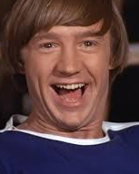

News
New European Tour Announced
12th September 2018
The Monkees have announced a new tour for the month
of January 2019 which starts in Galway City, Ireland.
From there, the band will be travelling to Aberdeen (Scotland), Copenhagen (Denmark), Brann (Norway),
Firenze (Italy), Barcelona (Spain) and finally Albufeira (Portugal).
The boys are very excited to get to see their fans across some smaller, more intimate venues in Europe.
This will of course mean that the band are not available for other events during this tour.
See you soon Europe!
Awards Season
20th August 2018

The Monkees have been awarded the title of 'Best
Wedding Band in America' after a vote. They were nominated along with The Chimps, The Gorillas and The Lemurs.
The awards ceremony took place in Hollywood last night.
Davy, Micky, Peter and Michael said they were delighted to be recognised for their efforts in making
weddings extra special.
Stay tuned for news about an upcoming tour.
About The Monkees

The Band
The Monkees are an American rock and pop band originally active between 1966 and 1971,
with reunion albums and tours in the decades that followed. They were formed in Los Angeles
in 1965 by Bob Rafelson and Bert Schneider for the American television series
The Monkees which aired from 1966 to 1968. The musical acting quartet was composed of
Americans Micky Dolenz, Michael Nesmith, and Peter Tork; and English actor and singer
Davy Jones. The band's music was initially supervised by producer Don Kirshner,
backed by the songwriting duo of Tommy Boyce and Bobby Hart.
The four actor-musicians were allowed only limited roles in the recording studio
for the first few months of their five-year career as "the Monkees". This was due in
part to the amount of time required to film
the television series. Nonetheless, Nesmith did compose and produce some songs from
the beginning, and Peter Tork contributed limited guitar work on the sessions produced
by Nesmith. They eventually fought for the right
to collectively supervise all musical output under the band's name.
The television show was canceled in 1968, but the band continued to record music
through 1971. A revival of interest in the television show came in 1986, which led to
a series of reunion tours and new records.
The group has reunited and toured several times since then with different line-ups and
varying degrees of success.
After Davy Jones died on February 29, 2012, the surviving members reunited for a
tour in November–December 2012 and again in 2013 for a 24-date tour. The Monkees
continued to tour through their 2016 50th Anniversary,
with Dolenz and Tork forming the core of the band and Nesmith continuing to join them
occasionally. Dolenz described The Monkees as initially being "a TV show about an
imaginary band… that wanted to be the Beatles that
was never successful". Ironically, the actor-musicians became one of the most successful
bands of the 1960s.
The Monkees have sold more than 75 million records worldwide making them one of the
biggest selling groups of all time with international hits, including "Last Train to
Clarksville", "Pleasant Valley Sunday", "Daydream
Believer", and "I'm a Believer". Newspapers and magazines reported that the Monkees
outsold the Beatles and the Rolling Stones combined in 1967, but Nesmith claims in
his autobiography Infinite Tuesday that it was a lie that he told an Australian reporter.
The Members
Davy Jones

30 December 1945 - 29 February 2012
David Thomas
Jones was born at 20 Leamington Street, Openshaw,
Manchester, on 30 December 1945. His television
acting debut was on the British television soap
opera Coronation Street. He portrayed Colin Lomax,
Ena Sharples' grandson, for one episode on 6 March 1961.
He also appeared in the BBC police series Z-Cars.
He dropped out of secondary school to begin his
career as a jockey. This career was short-lived,
however. Even though his trainer believed Jones
would be successful
as a jockey, he encouraged his young protege to
take a role as the Artful Dodger in a production
of Oliver! in London's West End, a move which
changed Jones' life forever.
Micky Dolenz
Born March 8, 1945
Dolenz was born at the Cedars-Sinai Medical
Center, in LA, California, the son of actors
George Dolenz and Janelle Johnson.
Dolenz began his show-business career
in 1956 when he starred in a children's TV
show called Circus Boy. Dolenz made sporadic
appearances on network television shows and
pursued his education. Dolenz went to Ulysses
S. Grant High School in Valley Glen, Los Angeles,
California, and graduated in 1962. In 1964,
he was cast as Ed in the episode "Born of
Kings and Angels" of the NBC education drama
series, Mr. Novak, starring James Franciscus
as an idealistic Los Angeles teacher. Dolenz
was attending college in Los Angeles when he
was hired for the "drummer" role in NBC's The Monkees.
Michael Nesmith

Born December 30, 1942
Nesmith was born in Houston, Texas, in 1942.
He is an only child.
When he was 15 he enrolled in the Dallas
Theater Center teen program, where he was
featured in several plays.
Nesmith later enrolled in San Antonio
community college. While in college, Nesmith
began to write more songs and poetry and
eventually moved to Hollywood. Nesmith was
offered a publishing deal for his songs, and it
was while Nesmith was at this publishing
house that Barry Friedman brought the ad for
auditions for a new TV series, The Monkees,
to Nesmith's attention. In October 1965,
Nesmith landed the role as "Mike" in the show,
which required real-life musical talent.
Peter Tork
Born February 13, 1942
Tork was
born at the former Doctors Hospital, in Washington,
D.C. He is the son of Virginia Hope and Halsten
John Thorkelson, an economics professor at the
University of Connecticut.
He began studying piano at the age of
nine, showing an aptitude for music by
learning to play several different instruments,
including the banjo and both acoustic bass
and guitars. Tork attended Windham High School
in Willimantic, Connecticut, and was a member
of the first graduating class at E.O. Smith
High School in Storrs, Connecticut. He attended
Carleton College before he moved to New York
City, where he became part of the folk music
scene in Greenwich Village during the first
half of the 1960s.